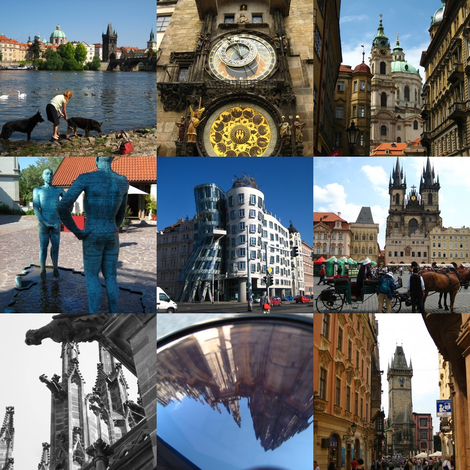

Ah beautiful prague..the town for lovers, couples and newlyweds. Too bad I was none of that. So I held my own hand and strolled myself lovingly down to the Old Town Square, the Old Astronomical Clock, Charles Bridge and climbed solo to the top of Prague Castle.
It was probably the most romantic time I’ve spent with myself :p And Prague was really pretty.
Which in hindsight, being alone was good because I then spent the next 13 days on a coach with 26 Australians, 1 Canadian (with voice volume control problems), 1 Singaporean & 1 Nepalese, sharing 12-room dorms. Ah, the beautiful silence of earplugs and the ipod.
We headed off to Olomuoc (Poland), stopped at the Bone Church (us and a long queue of korean, german and scandinavian tourists), intimidated the locals with our numbers (insta-crowd) and got lost..again. There also happened to be in our Polish hotel, 60 Singaporean schoolkids who happened to be there for singing championships. They treated us to the most beautiful singing in the evening air. And the next morning, there were 30 Busabout tourists and 60 singaporean schoolkids at the hotel breakfast buffet. Being Malaysian, I am familiar with facing Singaporeans at the buffet table so I woke up 30 minutes earlier than everyone else :p Here’s a tip, when dealing with Singaporeans at a buffet table (or a sale, queue or registration for colleges) – duck, dodge, hide and evade! No, I’m not being racist, this typically Singaporean behaviour is defined as “kiasu”
http://en.wikipedia.org/wiki/Kiasu
Next stop – Auschwitz. Auschwitz (German concentration camp) was really powerful. They had exhibits of all the shoes, spectacles and suitcases collected and even the hair the Nazis harvested from the women to make sacks and clothing. We walked through the infamous shower chambers, the cells and the shooting wall. It was really powerful and it’s worth going there to remember what happenned. There is Auschwitz I & Auschwitz II (Birkenau) that is still empty now. We walked through the Death Gate and saw the railway line. Still makes me think now and I am really honoured to have been able to visit the place.
Photos of Auschwitz. I didn’t take any photos of the exhibits, inside the buildings or at the shooting wall out of respect. And the coach almost left me at auschwitz (long story) and the next day dropped us off on a parking lot next to a dumpster and told us it was a picnic spot. To be fair, there was a view of the mountains – behind the dumpster…if you stood on top of the cars. On your toes.
Then we spent 30 minutes driving through Slovakia…
Anyway that’s it for this email.. will send the rest later

Shi